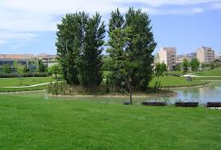
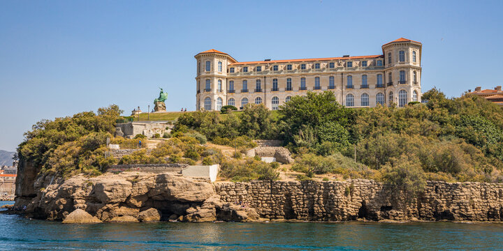
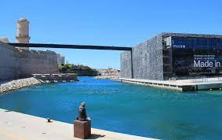
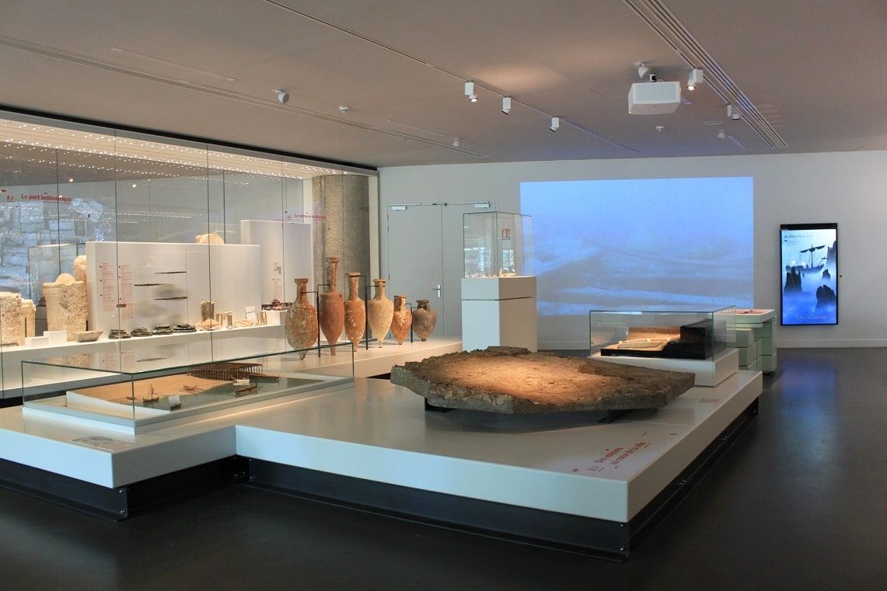
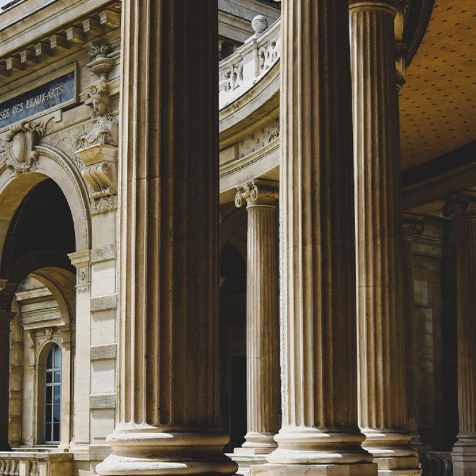
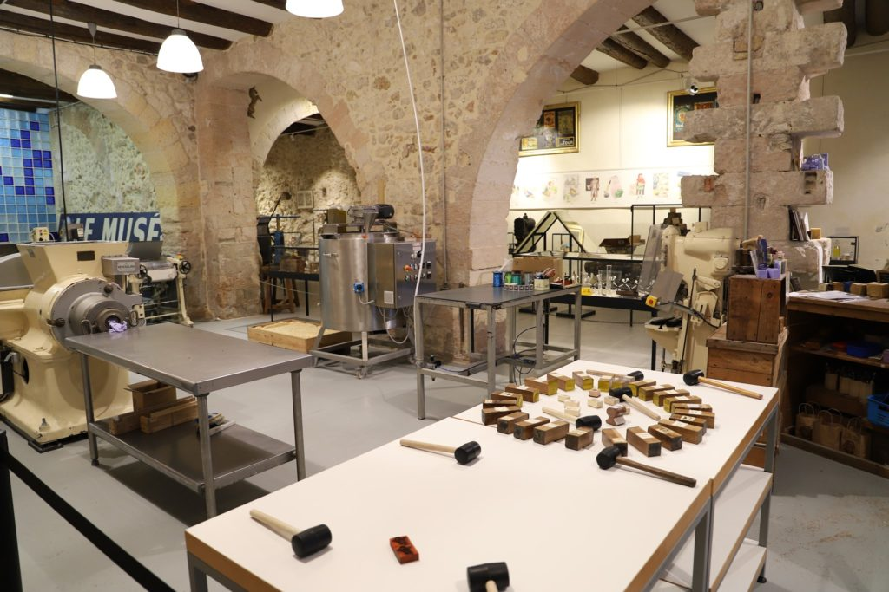

Les parcs
Le parc Borély

Le parc Borély est le plus fréquenté de tous les parcs Marseillais. Ce jardin situé dans le quartier de Bonneveine abrite l’une des plus belles bastides de Marseille : le château Borély. Il tient son nom d’une riche et célèbre famille Marseillaise, les Borély dont est issu Louis Borély. C’est un négociant Marseillais qui fit construire le château. En tout, le domaine de la famille faisait plus de 54 hectares ! C’est un grand parc paisible où il est possible de réaliser de nombreuses activités. Le parc possède des équipements sportifs et des larges allées permettent aux joggers et aux cyclistes de se déplacer facilement. Il est possible d’y visiter le jardin botanique qui s’étend sur 1,2 hectares et la roseraie du parc. Des barques permettent de faire le tour de l’étang. Le parc possède également des aires de jeux. Adresse : Av. du Parc Borély, 13008 Marseille
Le parc Longchamp

Ce parc de 8 hectares a beaucoup de secrets à vous réveler. Il abrite l’un des plus beaux monuments de Marseille : le palais Longchamp. Saviez-vous que ce palais abritait un château d’eau ? Au XIXe siècle, Marseille manque cruellement d’eau. Une épidémie de choléra se répand dans toute la ville pendant l’année 1835. L’ingénieur des Ponts et Chaussées Franz Mayor remet alors au goût du jour un projet datant du XVIe siècle : celui de construire un canal long de 85 kilomètres permettant d’acheminer l’eau de la Durance jusqu’à la ville de Marseille. Henry-Jacques Espérandieu conçoit alors les plans d’un ensemble architectural monumental pour célébrer l’arrivée de l’eau dans la ville : le Palais Lonchamp au centre duquel se trouve le château d’eau où est stockée l’eau de la Durance. Le palais Longchamp abrite aujourd’hui deux grands musées de Marseille : le musée d’histoire naturelle et le musée des Beaux-Arts. C’est dans ce parc qu’était jadis installé le jardin zoologique de Marseille ! Adresse : Bd Jard. Zoologique, 13004 Marseille
Le parc du 26e centenaire
Voilà l’un des parcs les plus atypiques de Marseille ! Installé entre les quartiers du Rouet et de la Capelette depuis 2001, le parc du 26e centenaire doit son nom aux 26 siècles d’histoire de la ville de Marseille. La ville est fondée par les Grecs en 600 avant Jésus-Christ. Il est construit sur le site de l’ancienne gare du Prado ! La gare du Prado n’a plus beaucoup d’utilité jusqu’en 2001. La mairie de Marseille décide d’y installer un nouveau parc. Certains vestiges de l’ancienne gare sont toujours présents : les rails ont été transformés en bassin à fontaines et traversent le parc sur sa longueur. Le toit de l’ancienne gare a également été conservé et offre un espace couvert aux promeneurs. Adresse : Place Zino Francescatti, 13010 Marseille
Le jardin du Pharo(parc Emile Duclaux)
LE PARC ÉMILE DUCLAUX Plus connu sous le nom de jardin du Pharo, le parc Émile Duclaux entoure le palais du Pharo. C’est Louis Napoléon Bonaparte qui ordonne la construction de ce palais au XIXe siècle pour son épouse l’impératrice Eugénie. 5,7 hectares de terrain entourent le palais qui dispose d’une vue imprenable sur le Vieux-Port, la rade de Marseille et le littoral. C’est le lieu idéal se reposer sur un banc et contempler l’entrée du port, les bateaux qui y entrent et sortent, la Bonne Mère au loin. Tout y semble particulièrement paisible ! Adresse : Boulevard Charles Livon 13007 Marseille
Les musées
MuCEM
Unique en son genre, le MuCEM (Musée des Civilisations de l’Europe et de la Méditerranée), à Marseille, est tout entier consacré aux cultures de l’Europe et de la méditerranée. A l’entrée du Vieux Port, avec vue sur le grand large, le musée prend tout son sens. C’est ici même qu’ont transité, des siècles durant, les voyageurs du monde entier. S’il est fortement ancré dans le passé, le MuCEM se veut aussi et surtout témoin du présent, à l’heure où le monde méditerranéen connaît des transformations, tant religieuses, sociales que politiques. Une riche collection répartie dans 3 lieux Cité culturelle imbriquée dans la cité phocéenne, Le MuCEM abrite pas moins d’un million d’œuvres, objets et documents. Véritable complexe patrimonial, il s’étend sur 40 000 m² et s’articule essentiellement autour de deux grands sites chargés d’histoire : Le J4 Rudy Riciotti, architecte français né en Algérie, a conçu à partir de cet ancien môle portuaire un bâtiment contemporain flambant neuf. On y retrouve l’histoire des civilisations méditerranéennes du néolithique jusqu’à nos jours à travers la Galerie de la Méditerranée, espace d’expositions semi-permanentes. Variée, la programmation mêle aussi débats, spectacles et projections de films dans l’auditorium ou dans la médiathèque. A noter, le toit-terrasse vaut, lui aussi, le détour. Le Fort Saint-Jean Relié au môle J4, on atteint ce superbe monument historique (principalement du XVIIème siècle) via une haute passerelle de béton longue de 115 mètres. Utilisé jusqu’en 1962 par les militaires, il s’ouvre pour la première fois au public avec l’arrivée du MuCEM. On y retrouve des expositions permanentes (art et traditions populaires) dans le village et la galerie des Officiers ainsi que dans la chapelle Saint-Jean. Des expositions temporaires sont également visibles dans le bâtiment Georges-Henri Rivière. Sans oublier la quinzaine de jardins méditerranéens dans lesquels se promener, ou encore la Tour du Roi René pour une vue imprenable sur Marseille et sur la mer… Parmi les objets phares du musée : un orgue de foire de Gavioli (classé trésor national), une maquette du Saint-Sépulcre de Jérusalem (XVIIème siècle) ou encore un Sakieh, cet instrument hydraulique qui servait, grâce à la force animal (vâche, âne...) à puiser l’eau de la vallée du Nil... Un troisième lieu, le centre de conservation et de ressources (CCR), vient compléter l’ensemble. Situé dans le quartier de la Belle de mai et imaginé par l’architecte Corinne Vezzoni, il abrite fonds documentaires, bibliothèque et archives artistiques. Dialogue des cultures La vocation, ou plutôt les vocations, d’un tel lieu ? Mettre en lumière les relations qu’entretient le bassin méditerranéen avec le reste du monde, et ce à travers les siècles Promouvoir le dialogue, les rencontres, les échanges entre les civilisations Participer au travail de mémoire (histoire coloniale, conflits du passé restés ancrés dans le présent…) Informer sur les différentes cultures, appartenances et mœurs (religions, régimes alimentaires, vêtements, musique…) Autant de grandes thématiques vues par un œil pluridisciplinaire (anthropologique, sociologique, archéologique, ou encore historique). Adresse : 7 promenade Robert Laffont, 13002 Marseille 04 84 35 13 13
Musée d’Histoire de Marseille (MHM)
Le Musée d’Histoire de Marseille est un musée qui retrace l’histoire de la ville de Marseille depuis l’Antiquité jusqu’à nos jours. Situé au Centre Bourse, vous pourrez y voir des expositions sur la vie quotidienne des habitants au fil des siècles et les événements importants qui ont marqué Marseille. Le Musée d’Histoire de Marseille a été fondé en 1983. Il présente des collections uniques et inédites, retraçant 26 siècles d’histoire de la ville à travers différents objets du quotidien, pièces de beaux-arts et vestiges archéologiques. Un musée interactif Situé à deux pas du Vieux-Port, lieu où Marseille fut fondée par les Phocéens, le Musée d’Histoire de Marseille abrite sur près de 3500 m² le site du Port antique ainsi qu’une exposition permanente, mais aussi un espace d’exposition temporaire, un centre de documentation et un auditorium. Pour découvrir ces 26 siècles d’histoire, le musée a mis en place de nombreux outils multimédias pour permettre aux visiteurs de se plonger au plus profond de l’histoire de la Cité Phocéenne. Une application a été mise en place afin de découvrir certains lieux et monuments de la ville tels qu’ils étaient à l’Antiquité et au Moyen-Age, grâce à son smartphone ou tablette. La technologie de réalité augmentée permet d’être complètement immergé en profitant de reconstitutions fidèles, et d’avoir accès à de nombreuses informations historiques. Des vestiges archéologiques Vous pourrez admirer la plus grande flottille de vaisseaux antiques au monde. De plus, l’église de Malaval datant du 5e siècle et découverte lors de fouilles archéologiques a permis de mieux comprendre les débuts de la Chrétienté en Europe occidentale et de reconstituer la fabrication de l’huile sainte. Des fouilles témoignent d’une occupation humaine à Marseille, bien avant sa fondation en 600 av JC. Des milliers de peintures et gravures ornent cette grotte, habitée il y a plus de 27 000 ans. Le Saviez-vous ? Fermé pendant plusieurs années, le musée d’histoire a été entièrement rénové en 2013, année durant laquelle Marseille a été la Capitale européenne de la culture. La même année, le Mucem (Musée des Civilisations de l’Europe et de la Méditerranée) voyait le jour. Un accès au jardin des vestiges Le Jardin des Vestiges abrite les vestiges archéologiques du Port Antique de Marseille. C’est au cours de travaux réalisés en 1967 pour la construction d’un centre commercial au cœur de Marseille dénommé « Centre Bourse », que les vestiges ont été découverts. De nombreuses fortifications grecques, des enclos funéraires ainsi qu’une partie de l’ancien port ont été mis au jour. Cela a nécessité le classement du lieu en monument historique d’environ 10 000 m². Le jardin qui se visite aujourd’hui a été aménagé de façon à mettre en valeur les différents vestiges, résultats de l’une des plus importantes fouilles urbaines de l’après-guerre réalisée en France. 2 Rue Henri Barbusse, 13001 Marseille 04 91 55 36 00 MHM (Musée d’Histoire de Marseille)
Les musées du parc Longchamps
Musée des Beaux Arts de Marseille (MBA) Le Musée des Beaux-Arts de Marseille est un musée d’art moderne et contemporain qui abrite une collection de peintures, d’estampes, de sculptures et de photographies. Il est situé dans le centre-ville de Marseille et possède des œuvres de nombreux artistes renommés. Muséum d’Histoire Naturelle de Marseille (MHM) Le Muséum d’Histoire Naturelle présente la faune, la flore et les phénomènes géologiques de la région de Marseille. Le Palais Longchamp Le Palais Longchamp est un incontournable à Marseille : avec son magnifique parc, ce monument historique construit pour amener l’eau dans la ville est une véritable prouesse architecturale. En 1835, une épidémie de choléra frappa la cité phocéenne en raison du manque d’eau. C’est après ce drame, que l’ingénieur des Ponts et Chaussées Franz Mayor de Montricher réalisa un projet datant du XVIème siècle. Il s’agissait de creuser un canal de 85 kilomètres, destiné à amener l’eau la Durance jusqu’à Marseille. Après 10 ans de travaux, 18 aqueducs verront le jour pour transporter l’eau potable. L’architecte Henry Espérandieu, connu pour avoir conçu la Basilique Notre-Dame de la Garde, met en scène l’arrivée de l’eau sur le plateau Lonchamp composant, de 1682 à 1869, un ensemble architectural monumental. Un lieu diversifié Une architecture remarquable De part et d’autre du château d’eau, une colonnade couverte dessert deux musées et s’ouvre, côté ville, sur la cascade et, côté parc, sur un vaste jardin. Le lieu a joué un rôle déterminant dans l’attribution du titre de Capitale Européenne de la Culture, décerné à Marseille en 2013. Après l’inauguration de l’édifice en 1869, plusieurs sculpteurs ont été choisis pour décorer le Palais Longchamp de leurs œuvres. A l’entrée, on peut admirer les lions et les tigres du sculpteur animalier Antoine Louis Bayre alors qu’au centre trône une superbe fontaine monumentale symbolisant l’arrivée des eaux de la Durance réalisée par Jules Cavelier. Les musées du Palais Longchamp Dans l’aile gauche du bâtiment, vous trouverez le Musée des Beaux-Arts, qui conserve à ce jour des peintures, dessins et sculptures datant du XVIIème au XIXème siècle. Il est actuellement considéré comme le plus vieux musée de Marseille, en raison de sa création en 1802. Dans l’aile droite du palais, le Muséum d’Histoire Naturelle regroupe plusieurs collections de cabinets de curiosités datant du XVIIIème siècle, venant soit de la ville, soit de l’Etat. Ses expositions, lui ont fait remporter le titre de première catégorie de musée en 1967, comme 9 autres grands musées français. Le Palais Longchamp n’est pas seulement un monument incontournable, il cache derrière sa façade majestueuse, un jardin très fréquenté par les Marseillais, qui celui-ci abritait autrefois le Zoo de Marseille, dont il ne reste que les vestiges. Le Saviez-vous ? Le Palais Longchamp a abrité, de 1855 à 1987, le grand Zoo de Marseille. Il fut le premier zoo de Province. Les vestiges des cages restent encore visibles dans le parc, ainsi que le bâtiment de la Girafe. Certains animaux du zoo, à leur mort, ont été conservés au Muséum d’Histoire Naturelle, situé dans une des ailes du Palais Longchamp. L’observatoire du Palais Longchamp Une attraction scientifique accessible à tous Considéré comme le plus ancien établissement scientifique de Marseille, l’observatoire s’est installé sur le plateau de Longchamp, au cœur du jardin en 1864. Il était équipé du plus grand télescope du monde (80 cm de diamètre) pendant un siècle. Les lieux ont servi de grand laboratoire de recherche pendant plus de 140 ans. Les chercheurs, ont aujourd’hui quitté le site pour le Technopôle de Château-Gombert. Actuellement, le domaine est ouvert au public, et plus particulièrement aux groupes scolaires. L’association Andromède, propose des activités dédiées à l’astronomie, comme des séances de planétarium, des visites d’expositions, et même du grand télescope. On peut également assister à des conférences ou participer à des observations de la lune et du soleil. Une très bonne sortie à proposer à vos enfants si vous effectuez un séjour à Marseille en famille. Palais Longchamp, Rue Espérandieu, 13004 Marseille MBA (Musée des Beaux-Arts de Marseille) 04 91 14 59 30 MHNM (Musée d’Histoire Naturelle de Marseille) 04 91 14 59 50
Le musée du savon de Marseille
Idéalement situé sur les quais du Vieux-Port. Le musée du savon de Marseille signé de la savonnerie de la Licorne vous accueille au cœur d'un site historique... À l'intérieur de l'ancien arsenal des galères construit par Louis XIV. Ce monumental arsenal militaire fut conçu par Colbert dans la deuxième moitié du XVIIème siècle afin d’accueillir et d’armer les galères du roi Louis XIV dont la célèbre et somptueuse Réale, longue de 57 mètres et équipée de 32 paires de rames. Aujourd’hui, on peut encore ressentir dans le Musée du Savon, l’esprit des lieux avec cette pierre blanche très caractéristique de la région et ses poutres apparentes en bois. Notre musée vous ouvre les portes de l’histoire du savon de la préhistoire à nos jours grâce à des fresques, des œuvres, des documents, des objets et des pièces rares. Un musée interactif grâce à notre espace sensoriel et notre atelier de démonstration de fabrication du Savon de Marseille pendant lequel vous pourrez personnaliser votre propre création. Un lieu à découvrir que vous soyez en solo, en famille, avec des enfants ou en groupe. Et notre grande boutique sur deux niveaux vous attend juste à côté pour découvrir des centaines de produits et toute notre collection de véritables savons de Marseille. Adresse : 25 Quai de Rive Neuve, 13007 Marseille 04 96 12 00 91